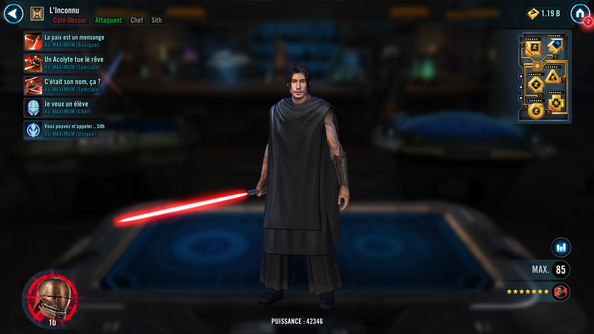
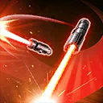
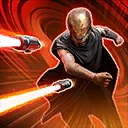
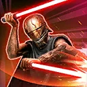

The Stranger
The Stranger is undeterred in using any technique, even forbidden, to defeat his foes
The Stranger is undeterred in using any technique, even forbidden, to defeat his foes


Deal Physical damage to target enemy and dispel all debuffs on The Stranger. During his turn, gain 50 Speed the first time this ability is used and 1 Speed (+1 per Relic Amplifier level; max 10) each subsequent use (stacking, max 50 triggers) for the rest of battle, and Alert for 1 turn, which can't be copied.
During his turn, if The Stranger has 250 Speed more than the target enemy, instantly defeat the target enemy (once per battle), which can't be evaded.

Deal Physical damage to target enemy and The Stranger gains Perfect Defense for 1 turn, which can't be copied, dispelled, or prevented. Call all Dark Side Unaligned Force User Acolyte allies to assist. Gain 50% Max Health the first time this ability is used and 5% Max Health each subsequent use (stacking) for the rest of battle.
Inflict all enemies with Tenacity Down for 2 turns and all enemies with less than full Health are Exposed for 1 turn.
If there is only 1 enemy remaining, the Dark Side Unaligned Force User Acolytes instantly defeat target enemy on assist (once per battle), which can't be evaded.
Omicron Boost : While in Grand Arenas and if all allies are Acolyte: If all enemies have fallen below 100% Health at least once this encounter, The Stranger gains Massively Overpowered for 1 turn, which can't be copied, dispelled, or prevented. If this ability defeats an enemy, revive all Acolyte allies, then all Acolyte allies recover full Health and Protection.

Deal Physical damage to target enemy and The Stranger gains Retribution for 1 turn, which can't be dispelled or prevented. Stun the target enemy for 1 turn and if all allies are Acolyte, Stun the weakest enemy for 1 turn, which can't be evaded or resisted. Gain 50% Defense Penetration the first time this ability is used and 5% Defense Penetration each subsequent use (stacking) for the rest of battle.
This attack ignores Protection. All other Acolyte allies gain 10% Turn Meter.
If this ability is used a third time against the same opponent this encounter then instantly defeat the target enemy (once per battle), which can't be evaded. If this ability instantly defeats an enemy, all enemies are Demoralized for 2 turns, which can't be copied, dispelled, evaded, or resisted.
All allies gain 50% Accuracy. Whenever an enemy attacks out of turn reduce the cooldown of Was That Its Name? by 1 (2 if the enemy was a Jedi).
At the start of battle, if there are no Galactic Legend allies and The Stranger has exactly one Jedi, one Light Side Unaligned Force User, and two Dark Side Unaligned Force user allies, all allies gain the Acolyte tag and the following effects are active:
- Whenever an ally attacks out of turn reduce the cooldown on An Acolyte Kills the Dream by 1
- Whenever an ally has a buff dispelled, the enemy that dispelled it can't recover Health or Protection for 1 turn
- At the start of each turn, allies have 100% Critical Chance while they have Protection, otherwise they have 100% Defense
- Whenever a Dark Side ally is inflicted with a debuff, The Stranger and Light Side allies gain 10% Turn Meter (once per turn)
- Whenever a Light Side ally is critically hit, Dark Side allies gain 10% Turn Meter (once per turn)
- Whenever an ally assists, dispel all debuffs on the ally they are assisting
- Whenever an ally counterattacks, inflict the target enemy with Defense Down for 1 turn (once per turn)
Omicron Boost : While in Grand Arenas: Whenever an Acolyte ally counterattacks, inflict the target enemy with Armor Shred for the rest of the encounter instead (once per turn). Whenever an enemy is Fractured, all enemies lose 100% Turn Meter, which can't be resisted.
Whenever an Acolyte ally takes damage on consecutive turns they gain a bonus turn. Whenever this bonus turn occurs that ally can't gain another bonus turn this way until taking damage from an enemy on consecutive turns again. Enemies deal 35% less damage when attacking an Acolyte from an assist.
In 3v3 Grand Arenas, if the team includes two Dark Side Unaligned Force users this will fulfill the conditions for the Acolyte tag

The Stranger has +35% Offense. The first time each enemy damages The Stranger (excluding summoned units), he gains 100% Turn Meter. Whenever The Stranger uses an ability he deals bonus True damage to target enemy equal to 10% of his Max Health if he has taken a turn before his enemies, which can't be evaded. This bonus damage value is reset on each enemy whenever they start their turn.
Whenever The Stranger uses a Special ability he calls himself to assist and gains Cortosis Armor, which can't be copied, for 1 turn or until he is damaged by an enemy ability. While The Stranger has Cortosis Armor he is immune to Turn Meter reduction.
Cortosis Armor: If this character is damaged by an enemy ability while they have this effect, the enemy who damaged them loses all of their Protection and 25% Speed for 1 turn
Omicron Boost : While in Grand Arenas: Whenever an enemy attacks The Stranger from an assist, The Stranger gains a bonus turn. At the start of the encounter, The Stranger can't have his Speed reduced below his base Speed for the rest of battle. The first time The Stranger is reduced to 25% Health he equalizes his Health and Protection with the strongest enemy.
Whenever The Stranger uses an ability he deals bonus True damage to target enemy equal to 10% of his Max Health for each turn he has taken before his enemies (stacking), which can't be evaded. This bonus damage value is reset on each enemy whenever they start their turn.